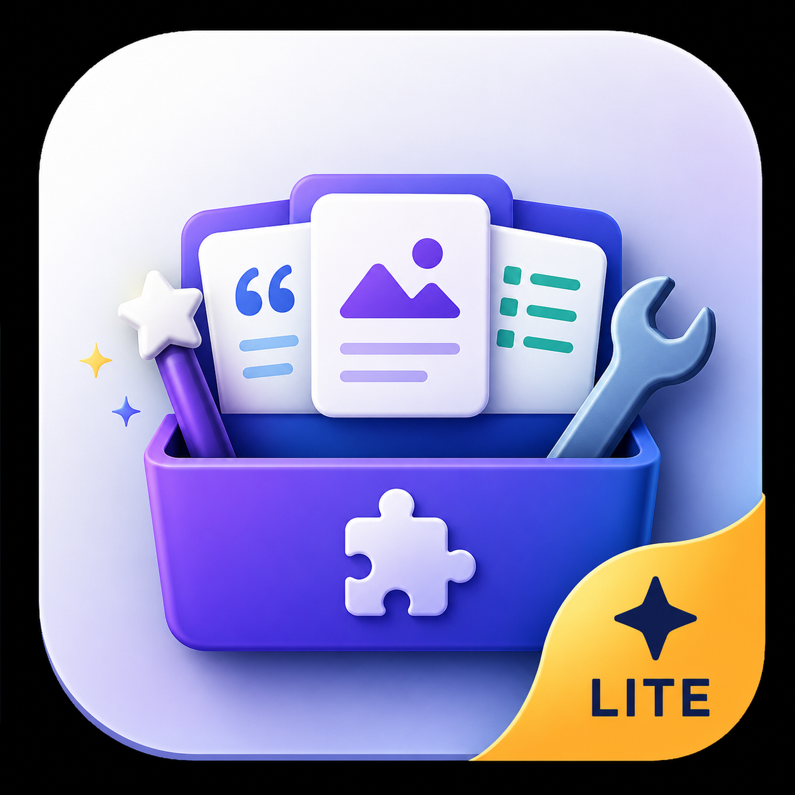

Documentation Hub
Tools your teams already live in, made more powerful.
Vectored builds production-grade apps for Atlassian Confluence & Jira, VS Code, and the command line — macros, forms, automation, and API tooling used by teams every day.
Products
Everything ships with full documentation, a support channel, and Marketplace-managed billing where applicable.

Macro Toolkit for Confluence
15 macros for pages that do more — Mermaid, PlantUML, draw.io and Excalidraw diagrams, polls, mood boards, charts, markdown, Swagger/OpenAPI viewers, carousels, and more.
Forms & Frontdoor for Confluence
Visual form builder with 13 field types, theming, access control, multi-section navigation — and a post-submit automation canvas that creates Confluence pages, opens Jira issues, and posts to Slack or Teams.

API Studio for VS Code & CLI
API development, testing, and documentation without leaving your editor — plus a scriptable CLI for CI pipelines.
Recognition Hub for Confluence & Jira
Peer recognition that lives in Confluence and Jira — a live mural of kudos cards with templates, company values, GIFs, reactions, rich email notifications, and page embedding.
TimeSheets for Jira
Time tracking that lives inside Jira — log against hierarchical cost centers and issues, route entries through per-project approvers, manage leave and holidays, lock past periods, and report on it all with native worklog sync.
Lens for Chrome
Screenshot and screen recording for documentation — capture a region of any tab as PNG, GIF or MP4, annotate and redact it, and file it straight into a local project folder with a metadata timeline.
On the roadmap
- Front Door — customizable landing pages and portals for Confluence spaces.
Want early access or to influence the roadmap? Tell us what you need.
Built for the platforms you use
Atlassian Confluence
Macro Toolkit and Forms extend the pages your teams write every day — diagrams, data collection, and automation without leaving Confluence.
Atlassian Jira
Forms automation creates and updates Jira issues from submissions today; dedicated Jira apps like Time Log are on the roadmap.
VS Code & CLI
API Studio brings request building, testing, and doc generation into the editor, with a CLI that slots into any CI pipeline.
Security & trust
Our Atlassian apps are built on Forge, Atlassian's managed cloud platform — designed so your data and permissions stay under your control.
Hosted on Atlassian Forge
App logic and storage run inside Atlassian's cloud — no third-party servers holding your content.
Respects your permissions
Actions are checked against the author's real Confluence and Jira permissions — at save time and again at execution.
Transparent by default
Execution logs for every automation run, published security and privacy policies, and open documentation.
Real support
A monitored support channel and docs that stay in sync with every release — not an abandoned wiki.
Jump into the docs
Create your first form in minutes.
Forms — AutomationConditions, batches, Jira, Slack & Teams.
Forms — EmbeddingPut forms on any Confluence page.
Macro Toolkit — All MacrosThe full catalog, macro by macro.
Macro Toolkit — MermaidDiagrams as code on Confluence pages.
API Studio — OverviewExtension and CLI documentation.